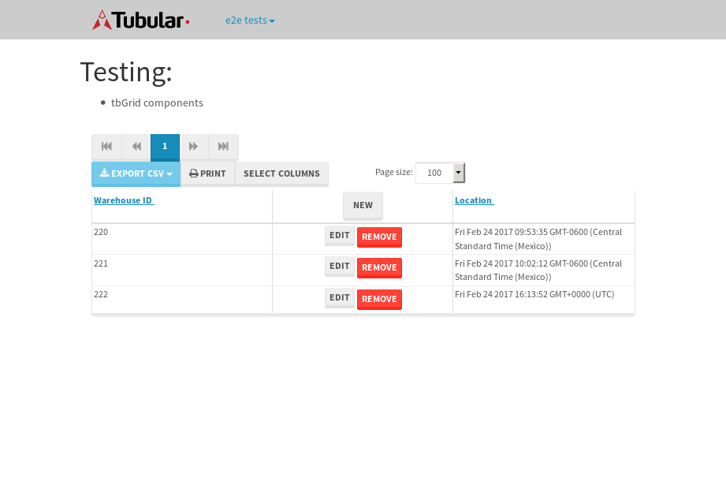

tbColumn.Grid Sorting - 27.065sTests: 5Skipped: 0Failures: 0 should sort data in ascending order then on descending order when sorting by Order Id column - 5.965sTests passed: 100.00%should order data in ascending order when click-sorting an unsorted text column - 5sTests passed: 100.00%should order data in descending order when click-sorting an ascending-sorted text column - 5.575sTests passed: 100.00%should order data in ascending order when click-sorting an unsorted date column - 5.274sTests passed: 100.00%should order data in descending order when click-sorting twice an unsorted date column - 5.249sTests passed: 100.00%
tbEmptyForm - 3.331sTests: 3Skipped: 0Failures: 0 should have an empty required field - 0.736sTests passed: 100.00%should not be able to click on save - 0.464sTests passed: 100.00%should load default value for numeric field - 0.453sTests passed: 100.00%
Tubular Filters.tbColumnFilter - 107.116sTests: 12Skipped: 0Failures: 0 should cancel filtering when clicking outside filter-popover - 8.642sTests passed: 100.00%should disable Value text-input for "None" filter - 6.669sTests passed: 100.00%should disable apply button for "None" filter - 7sTests passed: 100.00%should decorate popover button when showing data is being filtered for its column - 12.058sTests passed: 100.00%should correctly filter data for the "Equals" filtering option - 7.847sTests passed: 100.00%should correctly filter data for the "Not Equals" filtering option - 7.937sTests passed: 100.00%should correctly filter data for the "Contains" filtering option - 8.501sTests passed: 100.00%should correctly filter data for the "Not Contains" filtering option - 8.686sTests passed: 100.00%should correctly filter data for the "Starts With" filtering option - 7sTests passed: 100.00%should correctly filter data for the "Not Starts With" filtering option - 7.083sTests passed: 100.00%should correctly filter data for the "Ends With" filtering option - 7.256sTests passed: 100.00%should correctly filter data for the "Not Ends With" filtering option - 7.117sTests passed: 100.00%
Tubular Filters.tbColumnDateTimeFilter - 136.177sTests: 12Skipped: 0Failures: 0 should cancel filtering when clicking outside filter-popover - 7.306sTests passed: 100.00%should disable Value text-input for "None" filter - 6.642sTests passed: 100.00%should disable apply button for "None" filter - 7.035sTests passed: 100.00%should clear filtering when clicking on Clean button - 17.99sTests passed: 100.00%should decorate popover button when showing data is being filtered for its column - 11.697sTests passed: 100.00%should correctly filter data for the "Equals" filtering option - 6.758sTests passed: 100.00%should correctly filter data for the "Not Equals" filtering option - 7.356sTests passed: 100.00%should correctly filter data for the "Between" filtering option - 12.463sTests passed: 100.00%should correctly filter data for the "Greater-or-equal" filtering option - 11.882sTests passed: 100.00%should corretlly filter data for the "Greater" filtering option - 12.671sTests passed: 100.00%should correctly filter data for the "Less-or-equal" filtering option - 12.012sTests passed: 100.00%should correctly filter data for the "Less" filtering option - 11.811sTests passed: 100.00%
Tubular Filters.tbColumnOptionsFilter - 80.418sTests: 3Skipped: 0Failures: 0 should cancel filtering when clicking outside filter-popover - 8.192sTests passed: 100.00%should decorate popover button when showing data is being filtered for its column - 11.72sTests passed: 100.00%should filter column-elements in accordance to the selected filter when selecting a single option - 49.648sTests passed: 100.00%
Tubular Filters.tbTextSearch - 48.911sTests: 5Skipped: 0Failures: 0 min-chars is not set - 1.024sTests passed: 100.00%should filter data in searchable-column customer name to matching inputted text, starting from 3 characters - 7.227sTests passed: 100.00%should filter data in searchable-column shipper city to matching inputted text, starting from 3 characters - 12.124sTests passed: 100.00%should show clear button when there is inputted text only - 6.912sTests passed: 100.00%should clear filtering when clicking clear button - 16.316sTests passed: 100.00%
tbForm related components.tbCheckboxField - 6.319sTests: 2Skipped: 0Failures: 0 should save changes on "SAVE" - 2.879sTests passed: 100.00%should discard changes on "CANCEL" - 1.936sTests passed: 100.00%
tbForm related components.tbDropDownEditor - 12.068sTests: 5Skipped: 0Failures: 0 should set initial input value to the value of "value" attribute when defined - 2.168sTests passed: 100.00%should show the component name value in a label field when "showLabel" attribute is true - 1.653sTests passed: 100.00%should show a help field equal to this attribute, is present - 1.941sTests passed: 100.00%should submit modifications to item/server when clicking form "Save" - 2.933sTests passed: 100.00%should NOT submit modifications to item/server when clicking form "Cancel" - 2.381sTests passed: 100.00%
tbForm related components.tbTextArea - 16.533sTests: 7Skipped: 0Failures: 0 should set initial input value to the value of "value" attribute when defined - 1.905sTests passed: 100.00%should be invalidated when the number of chars is not in the range of "min" and "max" attributes - 2.528sTests passed: 100.00%should show the component name value in a label field when "showLabel" attribute is true - 1.59sTests passed: 100.00%should show a help field equal to this attribute, is present - 1.898sTests passed: 100.00%should require the field when the attribute "required" is true - 1.884sTests passed: 100.00%should submit modifications to item/server when clicking form "Save" - 3.837sTests passed: 100.00%should NOT submit modifications to item/server when clicking form "Cancel" - 2.186sTests passed: 100.00%
tbForm related components.tbDateEditor - 13.749sTests: 6Skipped: 0Failures: 0 should set initial date value to the value of "value" attribute when defined - 1.768sTests passed: 100.00%should be invalidated when the date is not in the range of "min" and "max" attributes - 2.273sTests passed: 100.00%should show the component name value in a label field when "showLabel" attribute is true - 1.527sTests passed: 100.00%should show a help field equal to this attribute, is present - 1.672sTests passed: 100.00%should submit modifications to item/server when clicking form "Save" - 2.98sTests passed: 100.00%should NOT submit modifications to item/server when clicking form "Cancel" - 2.407sTests passed: 100.00%
tbForm related components.tbTypeaheadEditor - 17.377sTests: 7Skipped: 0Failures: 0 should show an options list when there is an API-info/component entered-data - 2.6sTests passed: 100.00%should select the option clicked - 2.241sTests passed: 100.00%should show a "delete" button when an option/match is selected, and delete the option if button is clicked - 2.28sTests passed: 100.00%should show a label value equal to the component name when "showLabel" attribue is true - 1.703sTests passed: 100.00%should require a value when "require" attribute is true - 2.454sTests passed: 100.00%should submit modifications to item/server when clicking form "Save" - 3.576sTests passed: 100.00%should NOT submit modifications to item/server when clicking form "Cancel" - 1.962sTests passed: 100.00%
tbForm related components.tbSimpleEditor - 19.159sTests: 9Skipped: 0Failures: 0 should set initial input value to the value of "value" attribute when defined - 1.609sTests passed: 100.00%should be invalidated when the number of chars is not in the range of "min" and "max" attributes - 2.849sTests passed: 100.00%should show the component name value in a label field when "showLabel" attribute is true - 1.577sTests passed: 100.00%should set input placeholder to the value of "placeholder" attribute - 1.944sTests passed: 100.00%should validate the control using the "regex" attribute, if present - 2.235sTests passed: 100.00%should show a help field equal to this attribute, is present - 1.782sTests passed: 100.00%should require the field when the attribute "required" is true - 1.954sTests passed: 100.00%should submit modifications to item/server when clicking form "Save" - 2.653sTests passed: 100.00%should NOT submit modifications to item/server when clicking form "Cancel" - 2.031sTests passed: 100.00%
tbForm related components.tbNumericEditor - 15.266sTests: 7Skipped: 0Failures: 0 should set initial component value to the value of "value" attribute when defined - 1.663sTests passed: 100.00%should be invalidated when the entered number is not in the range of "min" and "max" attributes - 2.186sTests passed: 100.00%should show the component name value in a label field when "showLabel" attribute is true - 1.81sTests passed: 100.00%should show a help field equal to this attribute, is present - 1.768sTests passed: 100.00%should require the field when the attribute "required" is true - 2.199sTests passed: 100.00%should submit modifications to item/server when clicking form "Save" - 2.804sTests passed: 100.00%should NOT submit modifications to item/server when clicking form "Cancel" - 1.962sTests passed: 100.00%
tbForm Connection Error NoModelKey - 2.646sTests: 1Skipped: 0Failures: 0 tbForm connection error functionality - 0.52sTests passed: 100.00%
tbForm Connection Error NoServerUrl - 2.614sTests: 1Skipped: 0Failures: 0 tbForm connection error functionality - 0.447sTests passed: 100.00%
tbGridComponents - 8.091sTests: 6Skipped: 0Failures: 1 should add item with newRow method - 2.098sTests passed: 100.00%should add item with newRow method and cancel action - 0.941sTests passed: 100.00%should update item with tbSaveButton - 0.702sFailed: ElementNotVisibleError✗Tests passed: 0.00%should NOT update item on cancel Update action - 1.024sTests passed: 100.00%should remove item with tbRemoveButton - 1.057sTests passed: 100.00%should NOT remove item on cancel Remove action - 0.849sTests passed: 100.00%
tbGridPager.navigation buttons - 9.196sTests: 1Skipped: 0Failures: 0 should perform no action when clicking on the numbered navigation button corresponding to the current-showing results page - 1.5sTests passed: 100.00%
tbGridPager.navigation buttons.first/non-last results page related functionallity - 4.228sTests: 2Skipped: 0Failures: 0 should disable "first" and "previous" navigation buttons when in first results page - 2.325sTests passed: 100.00%should enable "last" and "next" navigation buttons when in a results page other than last - 1.903sTests passed: 100.00%
tbGridPager.navigation buttons.last/non-first results page related functionallity - 3.468sTests: 2Skipped: 0Failures: 0 should disable "last" and "next" navigation buttons when in last results page - 1.749sTests passed: 100.00%should enable "first" and "previous" navigation buttons when in a results page other than first - 1.719sTests passed: 100.00%
tbGridPager.page navigation - 7.341sTests: 5Skipped: 0Failures: 0 should go to next results page when clicking on next navigation button - 1.819sTests passed: 100.00%should go to previous results page when clicking on previous navigation button - 1.494sTests passed: 100.00%should go to last results page when clicking on last navigation button - 1.157sTests passed: 100.00%should go to first results page when clicking on first navigation button - 1.54sTests passed: 100.00%should go to corresponding results page when clicking on a numbered navigation button - 1.331sTests passed: 100.00%
tbGridPagerInfo - 5.889sTests: 2Skipped: 0Failures: 0 should show text in accordance to numbered of filter rows and current results-page - 1.56sTests passed: 100.00%should show count in footer - 0.475sTests passed: 100.00%
tbPageSizeSelctor - 12.476sTests: 4Skipped: 0Failures: 0 should filter up to 10 data rows per page when selecting a page size of "10" - 2.744sTests passed: 100.00%should filter up to 20 data rows per page when selecting a page size of "20" - 3.24sTests passed: 100.00%should filter up to 50 data rows per page when selecting a page size of "50" - 2.64sTests passed: 100.00%should filter up to 100 data rows per page when selecting a page size of "100" - 2.312sTests passed: 100.00%
tbRowSelectable - 10.896sTests: 2Skipped: 0Failures: 0 selected rows - 4.588sTests passed: 100.00%unselected rows - 3.425sTests passed: 100.00%
tbSingleForm - 18.005sTests: 8Skipped: 1Failures: 0 should load correct info - 0s***Skipped***Tests passed: 0%should change customer name - 2.349sTests passed: 100.00%should save it - 3.203sTests passed: 100.00%should clear the inputs - 2.274sTests passed: 100.00%should update - 2.969sTests passed: 100.00%should reset editor - 2.43sTests passed: 100.00%should not save if not Changes - 2.423sTests passed: 100.00%should not be able to click on save - 2.355sTests passed: 100.00%
{kind=link}